1IRIT, Université Paul Sabatier, Toulouse, France · *Equal contribution
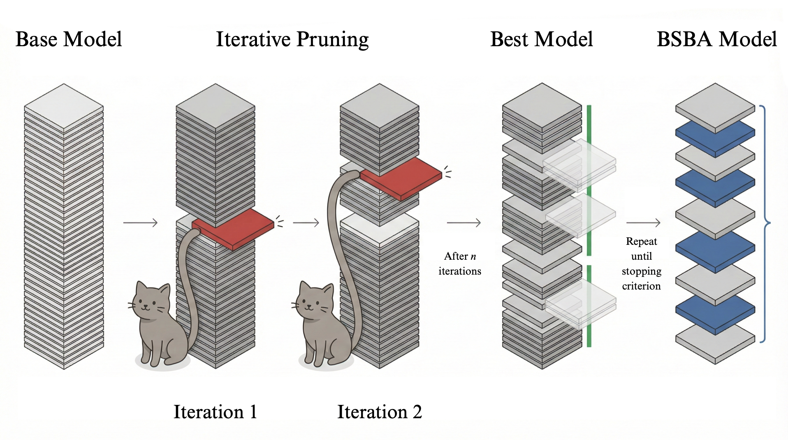
Large Language Models (LLMs) provide impressive performance but at the cost of substantial computation requirements. Lowering those requirements while maintaining LLM original accuracy has proved difficult. To solve this problem, we offer TALE (Task-Aware Layer Elimination), an inference-time algorithm that prunes entire transformer layers in an LLM by directly optimizing task-specific validation performance. We empirically demonstrate that LLM compression that preserves or exceeds baseline performance is inherently task-specific — a crucial finding that motivates the TALE approach. We evaluate TALE on 9 tasks and 5 models, including LLaMA 3.1 8B, Qwen 2.5 7B, and Mistral 7B, under both zero-shot and few-shot settings. TALE consistently improves accuracy and reduces computational cost across all benchmarks, outperforming previous general and layer-wise pruning methods such as SLEB. A minimal, one-time pruning overhead (typically 1–2 GPU-hours) yields continued task-maximal inference savings, making it an ideal tool for production-ready, domain-specific models. TALE produces further performance gains when combined with fine-tuning, offering a rigorous, deployable solution for creating maximally efficient, task-specialized LLMs.
TALE is a greedy, iterative, training-free algorithm. No retraining. No architectural changes. Hardware-agnostic.
A transformer maps input vectors through a stack of L layers via residual connections. Removing layer ℓ simply sets its residual contribution to zero: X(ℓ) = X(ℓ−1). This makes the architecture naturally amenable to layer-wise pruning without any weight modification.
Our key observation is that intermediate representations X(k), decoded at layer k < L, can achieve higher task accuracy than the final layer. Some layers contribute marginally or introduce representational noise for a given task — and selectively removing them preserves or even improves downstream accuracy.
The stopping threshold ε is set to 8% below baseline task accuracy, allowing the search to explore slightly lower-performing configurations before converging. In practice, the pruning of LLaMA 3.1 8B completes in approximately 1–2 GPU-hours on a single A100, amortized over the model's entire inference lifetime. TALE requires only 500–1500 validation examples to determine optimal layer removal.
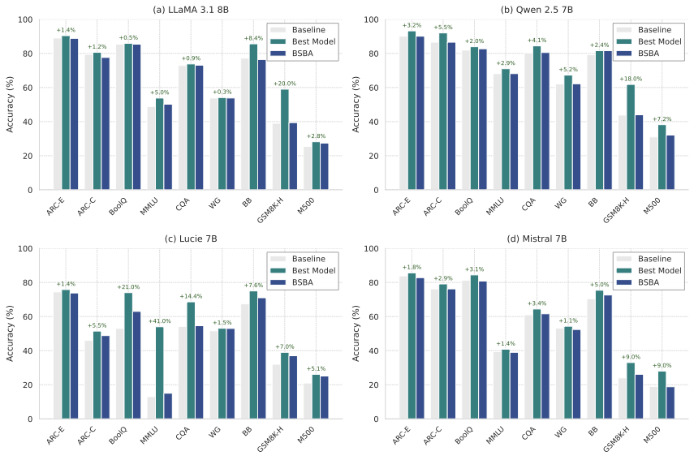
Evaluated on LLaMA-2-7B and LLaMA-2-13B using LM-Eval accuracy (zero-shot). TALE is the only method that consistently exceeds the unpruned baseline.
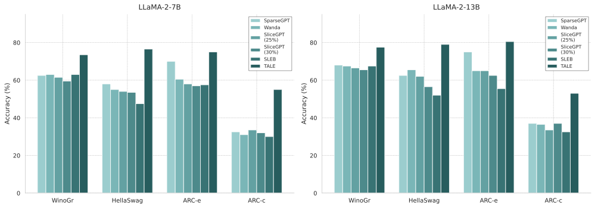
| Model | Method | Sparsity | WinoGrande | HellaSwag | ARC-Easy | ARC-Challenge |
|---|---|---|---|---|---|---|
| LLaMA-2-7B | Baseline | 0% | 69.1 | 76.0 | 74.6 | 46.3 |
| SparseGPT | 50% | 64.3 | 57.9 | 60.3 | 33.8 | |
| Wanda | 50% | 61.9 | 54.8 | 56.9 | 32.1 | |
| SliceGPT | 25% | 62.9 | 53.1 | 57.9 | 33.3 | |
| SliceGPT | 30% | 60.8 | 47.9 | 51.4 | 30.9 | |
| SLEB | 10% | 62.4 | 69.3 | 62.7 | 36.9 | |
| TALE (ours) | 10% | 73.1 | 80.0 | 76.7 | 54.5 | |
| LLaMA-2-13B | Baseline | 0% | 72.2 | 79.4 | 77.5 | 49.2 |
| SparseGPT | 50% | 68.3 | 65.2 | 66.4 | 38.8 | |
| Wanda | 50% | 66.8 | 62.2 | 64.1 | 36.1 | |
| SliceGPT | 25% | 67.0 | 56.9 | 62.1 | 37.4 | |
| SliceGPT | 30% | 66.1 | 52.4 | 56.1 | 33.2 | |
| SLEB | 10% | 66.9 | 74.4 | 71.8 | 41.6 | |
| TALE (ours) | 10% | 76.8 | 83.4 | 80.5 | 53.0 |
LM-Eval accuracy (%) on zero-shot benchmarks. Bold = best per model.
TALE improves first-token latency in 9/9 settings (macro average: −14.3%) and throughput in 9/9 settings (macro average: +17.9%), measured on a single A100-80GB GPU. The reported model is the Best variant, not BSBA. The one-time pruning cost (1–2 GPU-hours) is negligible relative to the inference savings across a model's deployment lifetime.
Accuracy of LLaMA 3.1 8B as layers are progressively removed. ★ = best model · ● = best speedup at baseline accuracy (BSBA).
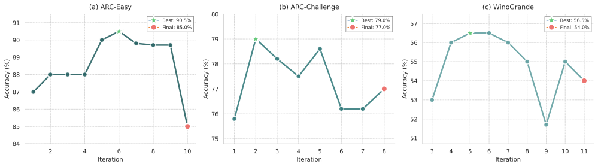
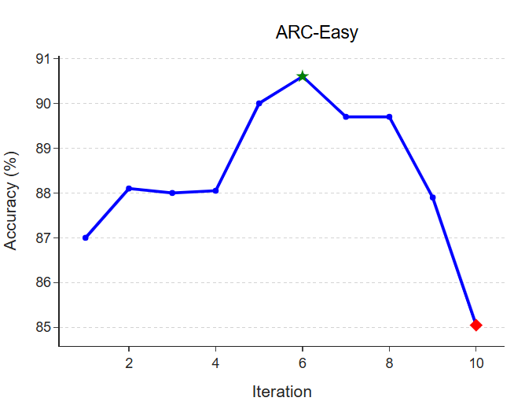
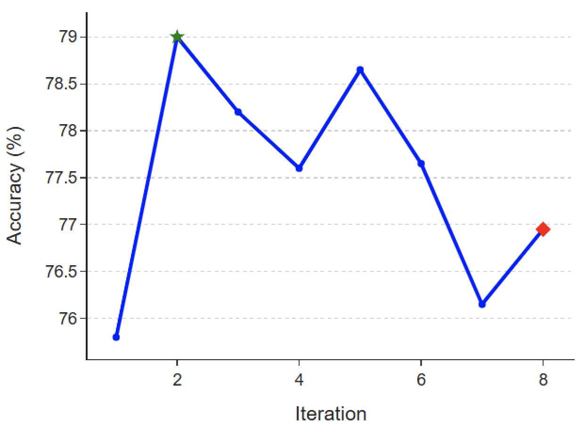
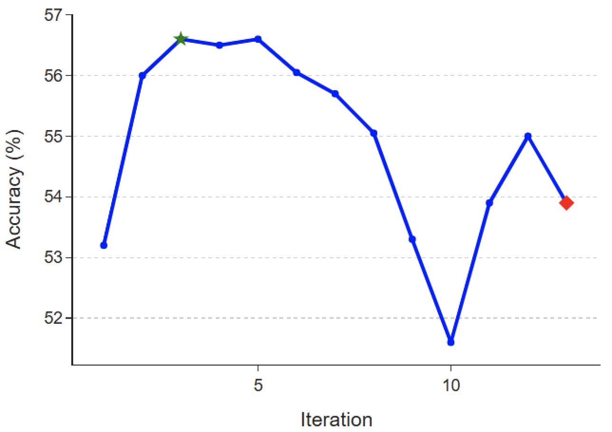
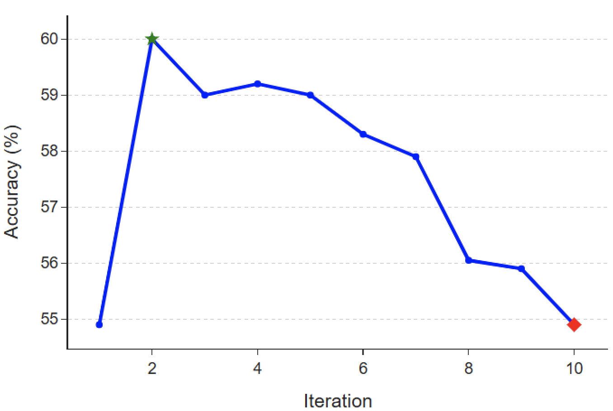
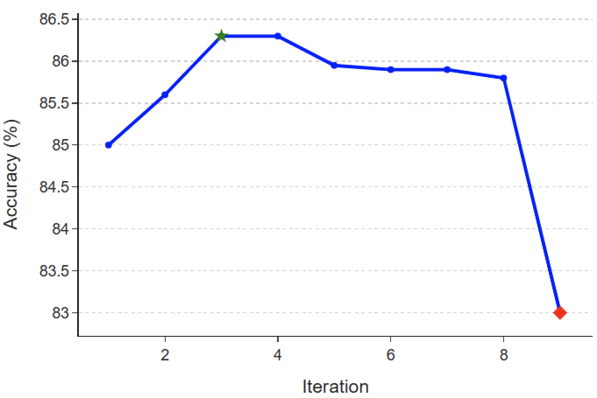
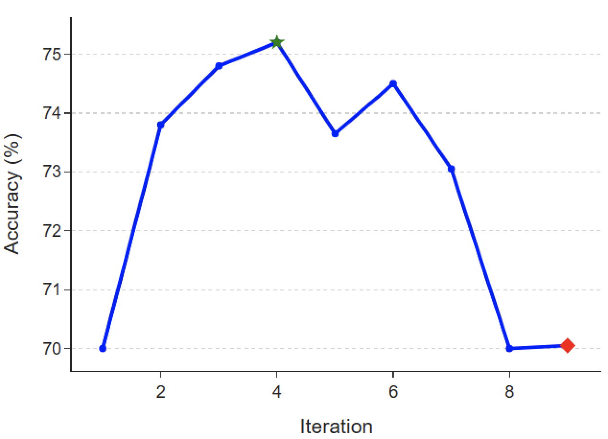
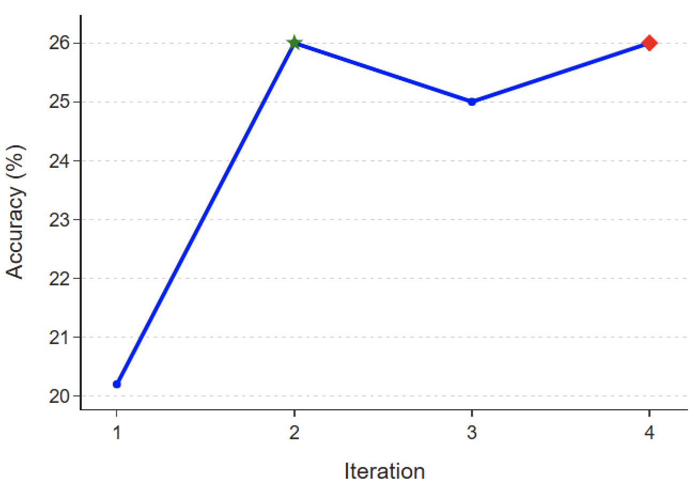
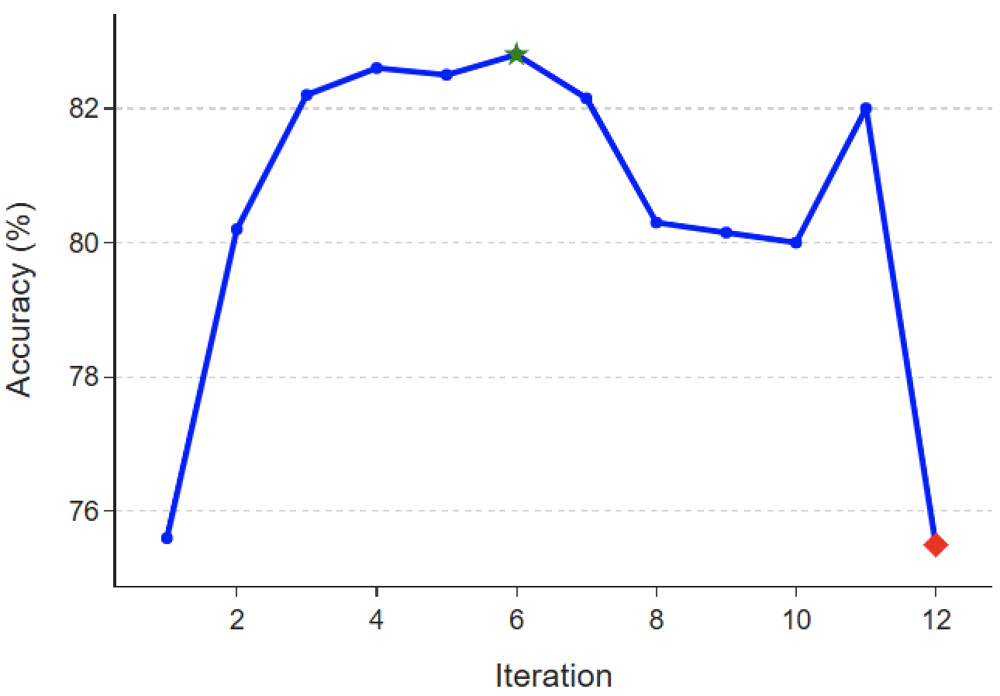
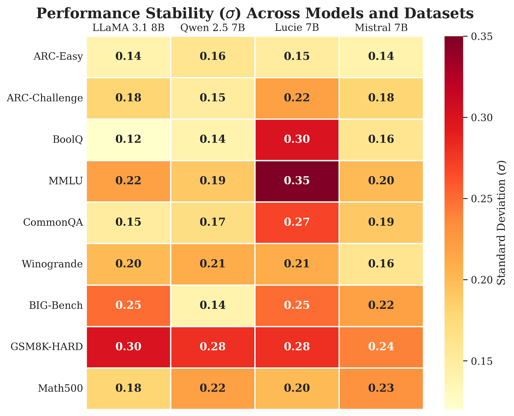
Rather than hurting fine-tuning, TALE complements it. Pruning before fine-tuning reduces training time by ~18.5% while further improving accuracy. Iterating pruning and fine-tuning yields the best results across all settings. TALE acts as a regularizer, simplifying the optimization landscape by removing redundant layers before adaptation.
| Model | Task | Baseline | TALE Only | FT Only | TALE → FT | FT → TALE | (TALE→FT)→TALE |
|---|---|---|---|---|---|---|---|
| LLaMA 3.1 8B | Winogrande | 53.8 | 56.7 | 85.0 | 87.1 | 86.7 | 87.4 |
| MMLU | 54.9 | 59.9 | 63.6 | 63.5 | 64.2 | 64.0 | |
| CommonQA | 72.2 | 75.3 | 81.9 | 81.8 | 83.4 | 82.9 | |
| GSM8K | 15.1 | 37.1 | 42.7 | 54.0 | 50.9 | 54.0 | |
| Qwen 0.5B | Winogrande | 49.9 | 51.9 | 50.4 | 50.4 | 50.5 | 52.5 |
| MMLU | 31.5 | 40.0 | 44.9 | 43.8 | 45.5 | 45.6 |
Accuracy (%) under different pruning and fine-tuning regimes. Bold = best per row.
@inproceedings{naim2025tale,
title = {TELL-TALE: Task Efficient LLMs with Task Aware Layer Elimination},
author = {Naim, Omar and Sharma, Krish and Asher, Nicholas},
booktitle = {Proceedings of the 63rd Annual Meeting of the
Association for Computational Linguistics (ACL)},
year = {2025},
url = {https://arxiv.org/abs/2510.22767},
}